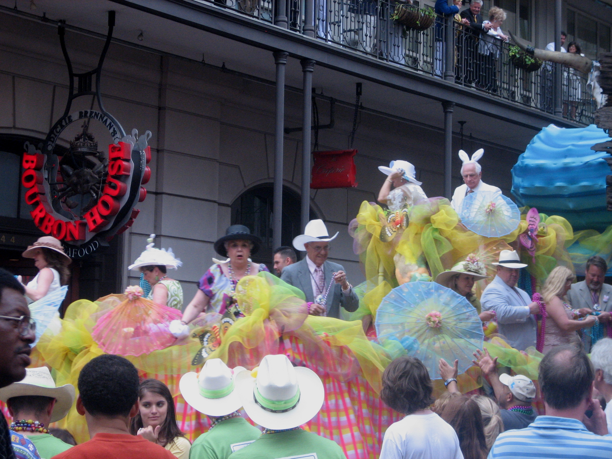

Joe walks towards the crowd of colorfuly dressed people shuffling towards the bus. As he approches he see's that it's a senior citizen tour! Joe is secretly very sneaky, he steals some glasses and a wig and tries to blend in with the crowd.

Joe shuffles along with the crowd of old people. An old man gives him the side eye, so he hunches his back and squints his eyes to avoid raising suspicion. Aboard the bus, Joe takes a window seat all the way in the back, closes his eyes, and waits for the tour to start.
But after a few minutes Joe realizes the bus isn't moving! He opens his eyes to find a short fluffy-haired old woman standing over him yelling and staring him down. Behind her is a small crowd, and everyone on the bus is turned to look at him.
Old lady: "WHAT ARE YOU DOING ON MY BUS"
Joe: "I. I. I'm Sorr..."
Old lady: "THIS IS MY GOD DAMNED BUS"
The bus starts moving and the old woman raises her cane above her head with a flourish, and brings it down HARD on Joes head. The other old people start chanting "MY BUS! MY BUS! MY BUS!" as she continues to beat him with her cane.
Joe lets out a blood curdling scream as the bus rounds the corner. Just before he blacks out, his last thought. "I should have taken the train".
Joe survives, but has to spend months recovering in a german hospital.
★★★